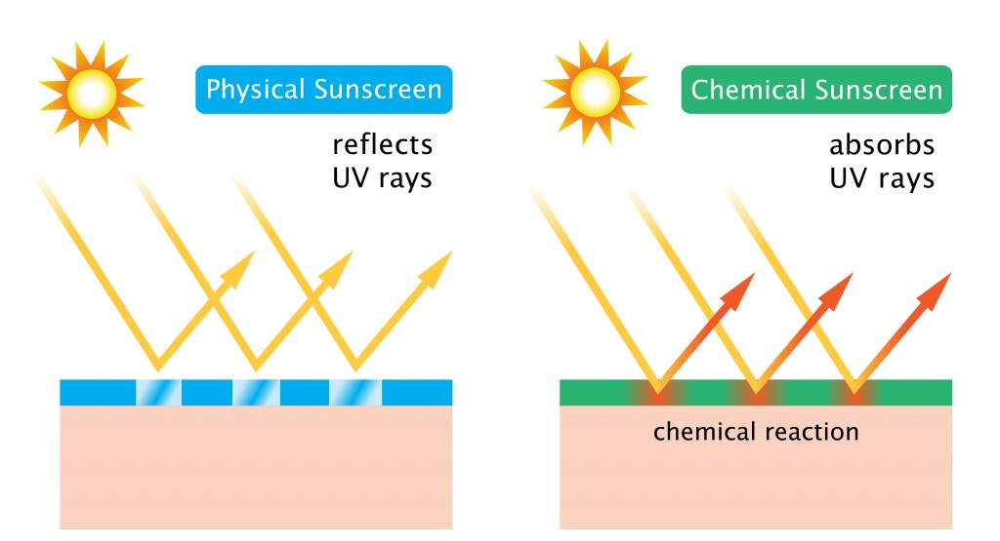

The FDA is greatly backlogged. They haven't approved a new sunscreen filter in over 10 years! Other countries that approve these newer filters have much better sun protection than those of us in the United States.
| Filters | Ingredients | Importance |
Filters are what makes sunscreens work. There are two types of filters in use: Physical and Chemical. This does not mean that physical sunscreens don't contain filters--everything is a chemical--but describes the mechanism of action.
In Japan, sunscreen manufacturers have a greater array of filters with which to work. This is because the FDA in the United States has not approved newer filters with greater technologies.
| American Filters | Japanese Filters |
|---|---|
|
|
|
The FDA is greatly backlogged. They haven't approved a new sunscreen filter in over 10 years! Other countries that approve these newer filters have much better sun protection than those of us in the United States. |

Physical sunscreens act like a shield. They bounce light rays off your skin.
Chemical sunscreens act like a dampening suspension on a car. The light hits the chemical bonds in the filter and causes them to vibrate, thus losing their damaging power.
Skin cancer can be avoided by use of sunscreen, protective clothing, and avoiding direct sunlight.
UV exposure is the number one cause of premature aging! Want youthful skin when you're older? Wear sunscreen!
You should aim for applying sunscreen every day in the morning and then after every two hours of sunlight to which you're exposed.